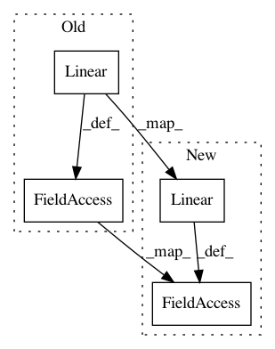

799308b5fb08e939e574c5078b546c24a0967d82,testing/test_mean_functions.py,TestModelCompositionOperations,setUp,#TestModelCompositionOperations#,65
Before Change
zero = GPflow.mean_functions.Zero()
one = GPflow.mean_functions.Constant(np.ones(self.output_dim))
linear1 = GPflow.mean_functions.Linear(rng.randn(self.input_dim, self.output_dim), rng.randn(self.output_dim)),
linear2 = GPflow.mean_functions.Linear(rng.randn(self.input_dim, self.output_dim), rng.randn(self.output_dim)),
linear3 = GPflow.mean_functions.Linear(rng.randn(self.input_dim, self.output_dim), rng.randn(self.output_dim)),
const1 = GPflow.mean_functions.Constant(rng.randn(self.output_dim))
const2 = GPflow.mean_functions.Constant(rng.randn(self.output_dim))
const3 = GPflow.mean_functions.Constant(rng.randn(self.output_dim))
const1inv = GPflow.mean_functions.Constant(-1 * const1.c)
linear1inv = GPflow.mean_functions.Linear(-1 * linear1.A, linear1.b * -1)
//a * (b + c)
const_set1 = GPflow.mean_functions.Product(const1,
GPflow.mean_functions.Additive(const2, const3))
linear_set1 = GPflow.mean_functions.Product(linear1,
GPflow.mean_functions.Additive(linear2, linear3))
//ab + ac
const_set2 = GPflow.mean_functions.Additive(GPflow.mean_functions.Product(const1, const2),
GPflow.mean_functions.Product(const1, const3))
linear_set2 = GPflow.mean_functions.Additive(GPflow.mean_functions.Product(linear1, linear2),
GPflow.mean_functions.Product(linear1, linear3))
//a-a = 0, (a + b) -a = b = a + (b - a)
linear1_minus_linear1 = GPflow.mean_functions.Additive(linear1, linear1inv)
const1_minus_const1= GPflow.mean_functions.Additive(const1, const1inv)
comp_minus_constituent1 = GPflow.mean_functions.Additive(GPflow.mean_functions.Additive(linear1, linear2),
linear1inv)
comp_minus_constituent2 = GPflow.mean_functions.Additive(linear1,
GPflow.mean_functions.Additive(linear2,
linear1inv))
k = GPflow.kernels.Bias(self.input_dim)
self.m_linear_set1 = GPflow.gpr.GPR(X, Y, mean_function=linear_set1, kern=k)
self.m_linear_set2 = GPflow.gpr.GPR(X, Y, mean_function=linear_set2, kern=k)
self.m_const_set1 = GPflow.gpr.GPR(X, Y, mean_function=const_set1, kern=k)
self.m_const_set2 = GPflow.gpr.GPR(X, Y, mean_function=const_set2, kern=k)
self.m_linear_min_linear= GPflow.gpr.GPR(X, Y, mean_function=linear1_minus_linear1, kern=k)
self.m_const_min_const = GPflow.gpr.GPR(X, Y, mean_function=const1_minus_const1, kern=k)
self.m_constituent = GPflow.gpr.GPR(X, Y, mean_function=linear2, kern=k)
self.m_zero = GPflow.gpr.GPR(X, Y, mean_function=zero, kern=k)
self.m_comp_minus_constituent1 = GPflow.gpr.GPR(X, Y, mean_function=comp_minus_constituent1, kern=k)
self.m_comp_minus_constituent2 = GPflow.gpr.GPR(X, Y, mean_function=comp_minus_constituent2, kern=k)
def test_precedence(self):
After Change
zero = GPflow.mean_functions.Zero()
one = GPflow.mean_functions.Constant(np.ones(self.output_dim))
linear1 = GPflow.mean_functions.Linear(rng.randn(self.input_dim, self.output_dim), rng.randn(self.output_dim))
linear2 = GPflow.mean_functions.Linear(rng.randn(self.input_dim, self.output_dim), rng.randn(self.output_dim))
linear3 = GPflow.mean_functions.Linear(rng.randn(self.input_dim, self.output_dim), rng.randn(self.output_dim))
const1 = GPflow.mean_functions.Constant(rng.randn(self.output_dim))
const2 = GPflow.mean_functions.Constant(rng.randn(self.output_dim))
const3 = GPflow.mean_functions.Constant(rng.randn(self.output_dim))
const1inv = GPflow.mean_functions.Constant(const1.c.get_free_state() *-1)
linear1inv = GPflow.mean_functions.Linear(A = linear1.A.get_free_state() * -1., b = linear1.b.get_free_state() * -1.)
//a * (b + c)
const_set1 = GPflow.mean_functions.Product(const1,
GPflow.mean_functions.Additive(const2, const3))
linear_set1 = GPflow.mean_functions.Product(linear1,
GPflow.mean_functions.Additive(linear2, linear3))
//ab + ac
const_set2 = GPflow.mean_functions.Additive(GPflow.mean_functions.Product(const1, const2),
GPflow.mean_functions.Product(const1, const3))
linear_set2 = GPflow.mean_functions.Additive(GPflow.mean_functions.Product(linear1, linear2),
GPflow.mean_functions.Product(linear1, linear3))
//a-a = 0, (a + b) -a = b = a + (b - a)
linear1_minus_linear1 = GPflow.mean_functions.Additive(linear1, linear1inv)
const1_minus_const1= GPflow.mean_functions.Additive(const1, const1inv)
comp_minus_constituent1 = GPflow.mean_functions.Additive(GPflow.mean_functions.Additive(linear1, linear2),
linear1inv)
comp_minus_constituent2 = GPflow.mean_functions.Additive(linear1,
GPflow.mean_functions.Additive(linear2,
linear1inv))
k = GPflow.kernels.Bias(self.input_dim)
self.m_linear_set1 = GPflow.gpr.GPR(X, Y, mean_function=linear_set1, kern=k)
self.m_linear_set2 = GPflow.gpr.GPR(X, Y, mean_function=linear_set2, kern=k)
self.m_const_set1 = GPflow.gpr.GPR(X, Y, mean_function=const_set1, kern=k)
self.m_const_set2 = GPflow.gpr.GPR(X, Y, mean_function=const_set2, kern=k)
self.m_linear_min_linear= GPflow.gpr.GPR(X, Y, mean_function=linear1_minus_linear1, kern=k)
self.m_const_min_const = GPflow.gpr.GPR(X, Y, mean_function=const1_minus_const1, kern=k)
self.m_constituent = GPflow.gpr.GPR(X, Y, mean_function=linear2, kern=k)
self.m_zero = GPflow.gpr.GPR(X, Y, mean_function=zero, kern=k)
self.m_comp_minus_constituent1 = GPflow.gpr.GPR(X, Y, mean_function=comp_minus_constituent1, kern=k)
self.m_comp_minus_constituent2 = GPflow.gpr.GPR(X, Y, mean_function=comp_minus_constituent2, kern=k)
def test_precedence(self):
In pattern: SUPERPATTERN
Frequency: 4
Non-data size: 4
Instances
Project Name: GPflow/GPflow
Commit Name: 799308b5fb08e939e574c5078b546c24a0967d82
Time: 2016-04-29
Author: pleonvil@uos.de
File Name: testing/test_mean_functions.py
Class Name: TestModelCompositionOperations
Method Name: setUp
Project Name: allenai/allennlp
Commit Name: 700abc65fd2172a2c6809dd9b72cf50fc2407772
Time: 2020-02-03
Author: mattg@allenai.org
File Name: allennlp/models/srl_bert.py
Class Name: SrlBert
Method Name: __init__
Project Name: catalyst-team/catalyst
Commit Name: bb1e4e1f662b2843f055238e75dd948bb30de1d5
Time: 2020-04-10
Author: scitator@gmail.com
File Name: tests/_tests_scripts/z_mvp_distributed_mnist_ae.py
Class Name: ClassifyAE
Method Name: __init__
Project Name: catalyst-team/catalyst
Commit Name: bb1e4e1f662b2843f055238e75dd948bb30de1d5
Time: 2020-04-10
Author: scitator@gmail.com
File Name: tests/_tests_scripts/z_mvp_mnist_ae.py
Class Name: ClassifyAE
Method Name: __init__